Lecture 21 Workbook
This workbook holds the notes and the questions for Lecture 21. Each section starts with notes that explain everything on the slides, and a little more. Answer the questions as we discuss the slides. For a multiple-choice question, choose one letter.
Run this lecture's code in BlueJ. The programs use JavaFX, which BlueJ includes but the course website's code boxes do not. On the website, the windows are screenshots, and the code cannot be run there. To try a program yourself, open it in BlueJ, right-click the class and choose Run JavaFX Application.
Section 8 has two complete programs to write after class. By the end, you should be able to:
- name four principles of a good interface and spot when a window breaks one;
- explain the event loop, and how an event-driven program differs from a sequential one;
- write a JavaFX program that shows a window with a label;
- write a handler class and register it on a button with
setOnAction; - read what the user typed in a text field when a button is clicked;
- arrange a window with
VBox,HBoxandBorderPane, and draw it as a tree of objects; and - write complete programs with buttons, text fields and handler classes.
1. Good design
Console programs and GUI programs
So far our programs have been console programs: they print lines of text, and the user types answers. Most programs people use have a GUI, a graphical user interface, with windows, buttons and boxes to type in. The two programs below do the same job: they ask for a name and greet the person.
ConsoleGreeter (the user types Ana)
Greeter What is your name? Ana Hello, Ana!
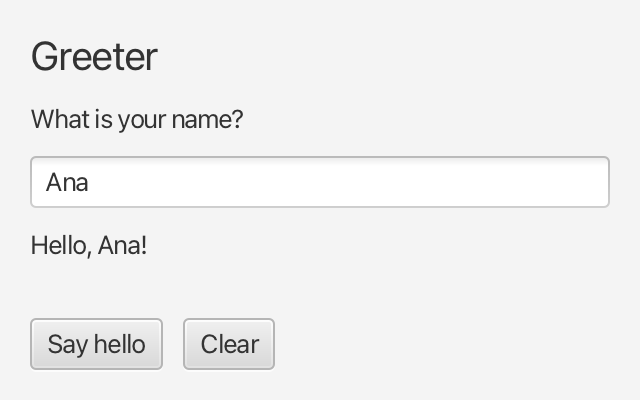
In the console version, the program decides the order: it asks one question, waits for one answer and ends. In the window version, the user sees the title, the box and both buttons at once, and can click them in any order and as often as they like. By the end of this lecture we can build the window on the right.
Four principles of interface design
HCI, human-computer interaction, studies how people use programs. A good interface can be used without reading a manual. Four principles help:
| Visible | You can see what you are able to do. Every box has a label, and every button says what it does. |
|---|---|
| Feedback | The program shows what just happened. After a click, something on the screen changes. |
| Consistent | The same action looks and works the same way everywhere. Save is always in the same menu. |
| Forgiving | Mistakes are easy to spot and easy to fix. A wrong entry gets a clear message, not a crash. |
A poor window and a better window
The window on the left breaks two of the principles. Its box has no label, so the user does not know what to type, and the button text Go does not say what the button does (visible). Clicking the button changes nothing on the screen (feedback). The window on the right fixes all three problems.
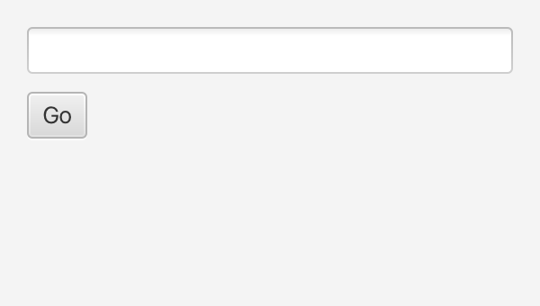
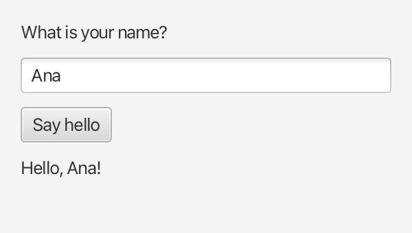
Practice
1.1 Give two changes that would make the Form window above easier to use. For each change, name the principle it helps.
1.2 A sign-up form has ten boxes. When one box is filled in wrongly, the form empties all ten boxes and shows Invalid input. Which principle does this break, and what should the form do instead?
1.3 A form shows Error 0x80 when an email address has no @ sign, and does not say which box is wrong. Which principle does it break most clearly?
- Visible
- Consistent
- Forgiving
- None: it shows a message, so it gives feedback.
1.4 Which change makes an app more consistent?
- A short sound after every click.
- An Undo button.
- The Cancel button is in the same place in every dialog.
- A label next to every box.
1.5 A drawing app has an Undo button that removes the last line drawn. Which principle does Undo support most directly?
- Visible
- Feedback
- Consistent
- Forgiving
2. Event flow
The event loop
Desktop programs, phone apps and web browsers all run a loop like the one below. Each pass waits for an event, something the user does, such as a click or a key press. Then it runs the code for that event, and redraws the parts of the window that changed. The loop ends when the user closes the program.
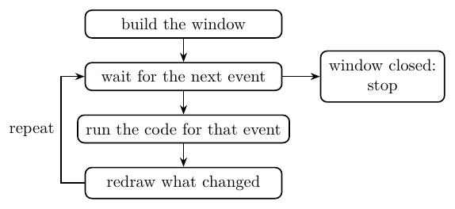
JavaFX, the library we use, writes this loop for us. It starts the loop, waits, and calls our code when an event happens. We never write the loop ourselves; we write only the code for each event.
The game loop
A game also runs a loop, but it does not wait for the user. Each pass reads which keys are down, updates the game (moves the player and the enemies one small step), and draws the whole screen. One pass draws one frame, and most games run about 60 frames per second. This is why the enemies keep moving when no key is pressed: the loop keeps going whether or not anything happens. The loop ends when the player quits.
Sequential and event-driven programs
A console program is sequential: the code decides the order of the statements, runs once and stops. A GUI program is event-driven: it builds the window, then waits, and the user's actions decide which code runs next.
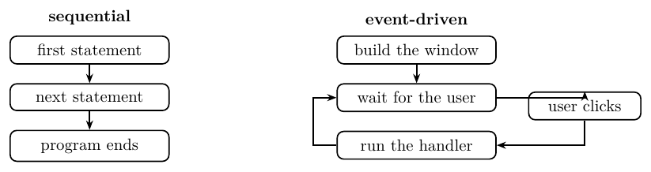
Events and handlers
An event is something that happens: a click, a key press, a swipe, a menu choice. A handler is the code that runs when that event happens. Some libraries call it a listener. The program connects each event to its handler before the user starts. Every GUI program works this way:
| Program | Event | Handler |
|---|---|---|
| A platform game | the jump key is pressed | jump(): the character jumps |
| A shopping site | Add to cart is clicked | addToCart(): adds the item |
| A photo app | the user swipes left | nextPhoto(): shows the next photo |
| Our first program | Say hello is clicked | handle(): shows Hello! |
Practice
2.1 Fill in the missing steps of the event loop.
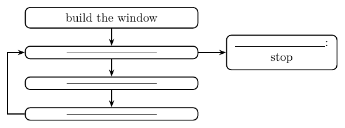
2.2 A calculator app has buttons for the digits, for + and for =. Name two events in this app, and say what the handler for each should do.
2.3 In a game, the enemies move even when the player presses nothing. In our JavaFX windows, nothing changes until the user does something. Explain the difference using the two kinds of loop.
2.4 Who writes the event loop in a JavaFX program?
- We write a
while(true)loop at the end ofstart. - JavaFX runs it; we write only the handlers.
- Each handler contains its own loop.
- BlueJ adds it when the program is run from BlueJ.
2.5 What ends the event loop in this lecture's programs?
- The
startmethod returning. - A handler's
handlemethod returning. - The user closing the window.
- The loop stops by itself after 60 passes.
2.6 Which is true of a game loop but not of the event loop?
- It ends when the user quits.
- It reacts to key presses.
- It draws the whole screen on every pass, even when no key is pressed.
- It runs code in response to what the user does.
2.7 Which of these programs is event-driven?
- A program that reads a file of marks and prints the average.
- A calculator app with buttons.
ConsoleGreeter, which waits for the user to type a name.- A program that prints a times table.
3. First window
JavaFX
JavaFX is a library of Java classes for windows, buttons, text boxes and menus. Every part of a window is an object, made with new like any object we have made before. BlueJ includes JavaFX. To run a JavaFX class in BlueJ, right-click it and choose Run JavaFX Application. The course's web IDE does not include JavaFX, so the programs in this lecture run in BlueJ.
A first JavaFX program
import javafx.application.Application;
import javafx.scene.Scene;
import javafx.scene.control.Label;
import javafx.stage.Stage;
public class HelloWindow extends Application
{
@Override
public void start(Stage stage)
{
Label message = new Label("Hello, world!");
Scene scene = new Scene(message, 300, 100);
stage.setTitle("Hello");
stage.setScene(scene);
stage.show();
}
}extends Application makes HelloWindow a JavaFX program. All the setup goes in the method start. It makes a label, puts it in a scene that is 300 pixels wide and 100 pixels high, gives the window the title Hello, puts the scene in the window and shows the window.
Stage, Scene and Label
- A Stage is the window itself: its border, its title bar and its buttons for closing it. JavaFX makes the stage and passes it to
start. - A Scene is everything shown inside the window. It holds exactly one object, called its root. Here the root is the label.
stage.setScene(scene)puts the scene in the window. - A Label is a piece of text the user can read but not edit.
The names come from a theatre: a stage shows a scene. Nothing appears on the screen until stage.show() runs.
Launching a JavaFX program
We never write new HelloWindow() and never call start ourselves. When the program is run, JavaFX makes the HelloWindow object, makes a Stage, and calls start(stage). Our code in start builds the window and calls show(). start is a method of Application that we override, as in Lecture 18. Outside BlueJ, a JavaFX program starts itself from main with the static method launch:
public static void main(String[] args)
{
launch(args);
}Practice
3.1 Write the start method of a class WelcomeWindow that shows a window titled Welcome, 400 pixels wide and 80 pixels high, with the text Lecture 21 inside.
3.2 HelloWindow uses a Stage, a Scene and a Label. Which of the three does our code not create with new, and where does it come from?
3.3 What happens if we delete the line stage.show(); from HelloWindow?
- It does not compile.
- The program runs, but no window appears.
- An empty window titled
Helloappears. Hello, world!is printed in the terminal instead.
3.4 Which method does every JavaFX program in this lecture override?
mainlaunchshowstart
3.5 In new Scene(message, 300, 100), what are 300 and 100?
- The width and height of the scene, in pixels.
- The x and y position of the window on the screen.
- The font size and the padding of the label.
- The largest number of rows and columns.
3.6 HelloWindow contains no new HelloWindow(). Why does its start method still run?
startis static, so it needs no object.- JavaFX makes the object and calls
start. - BlueJ writes the missing line when the class is compiled.
- Objects of a class that extends
Applicationcannot be made withnew.
4. Buttons
Adding a button
inside start
Button button = new Button("Say hello");
Label greeting = new Label("");
VBox root = new VBox(10);
root.setPadding(new Insets(15));
root.getChildren().addAll(button, greeting);
stage.setTitle("Hello");
stage.setScene(new Scene(root, 300, 110));
stage.show();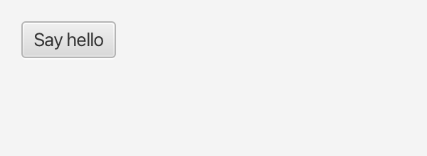
A Button is a control the user can click. A window with more than one object needs a pane, an object that holds others and arranges them. VBox(10) puts its children in a column, 10 pixels apart. setPadding(new Insets(15)) leaves a 15-pixel border inside it. getChildren().addAll(button, greeting) puts the button and the label in the box, in that order. The VBox is the scene's root. Clicking the button does nothing yet, because no handler is connected to it.
The EventHandler interface
A button needs to know what to do when it is clicked. JavaFX gives us an interface for that, the same idea as in Lecture 20. Shortened, it is:
public interface EventHandler<T>
{
void handle(T event);
}T is the kind of event. A click on a button is an ActionEvent, so a button wants an EventHandler<ActionEvent>. Any class that implements it promises a method handle(ActionEvent
event). The button calls handle every time it is clicked.
Writing a handler class
import javafx.event.ActionEvent;
import javafx.event.EventHandler;
import javafx.scene.control.Label;
public class HelloHandler implements EventHandler<ActionEvent>
{
private Label greeting;
public HelloHandler(Label greeting)
{
this.greeting = greeting;
}
@Override
public void handle(ActionEvent event)
{
greeting.setText("Hello!");
}
}The handler must change the label, so it keeps a reference to the label in a field, and the constructor receives that label. handle sets the label's text to Hello!. The parameter event describes the click; we do not need it here. If the class leaves out implements EventHandler<ActionEvent>, the line that registers it does not compile, even though the class has a handle method:
error: incompatible types: HelloHandler cannot be converted to EventHandler<ActionEvent>
Registering the handler
inside start
Button button = new Button("Say hello");
Label greeting = new Label("");
button.setOnAction(new HelloHandler(greeting));
VBox root = new VBox(10);
root.setPadding(new Insets(15));
root.getChildren().addAll(button, greeting);
stage.setTitle("Hello");
stage.setScene(new Scene(root, 300, 110));
stage.show();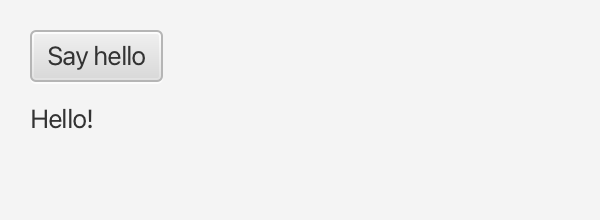
after one click
The new line is button.setOnAction(new HelloHandler(greeting));. It gives the button a HelloHandler object; this is called registering the handler. The handler gets the same greeting label that is shown in the window.
Handling a click
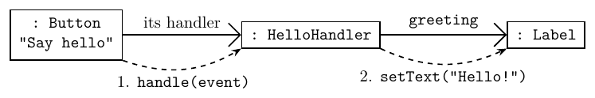
The button holds a reference to the handler object, and the handler holds a reference to the label. On a click, the button calls handle, and handle changes the label. The label is the same object that is in the window, so the window changes.
setOnAction only stores the handler. If we add System.out.println("start is finished"); after stage.show() and System.out.println("handle runs"); in handle, and the user clicks twice, the terminal shows:
start is finished handle runs handle runs
Practice
4.1 Write a handler class ByeHandler that sets the text of a label to Bye!. The label comes in through the constructor.
4.2 A window has a button byeButton and a label message. Write the line that registers a ByeHandler on the button.
4.3 start in HelloButton makes the label greeting as a local variable. Why can handle not just use that variable, so that HelloHandler needs a field and a constructor?
4.4 A student changes HelloHandler's constructor so that it ignores its parameter and does this.greeting = new Label("");. The program compiles. What does the window show after a click, and why?
4.5 HelloHandler keeps its handle method but loses implements EventHandler<ActionEvent>. What happens?
- It compiles and works as before.
- It compiles, but clicking does nothing.
setOnAction(new HelloHandler(greeting))does not compile.- A click throws an exception.
4.6 When does handle run?
- When
setOnActionis called. - Once, when
startruns. - Once, when the window first appears.
- Each time the button is clicked.
4.7 Why does the window change when handle calls greeting.setText("Hello!")?
handleredraws the whole window.- The handler refers to the same
Labelobject that is in the window. setOnActioncopied the label into the button.greetingis a static variable.
4.8 We delete the line button.setOnAction(new HelloHandler(greeting));. What happens when the button is clicked?
- Nothing changes.
- The program does not compile.
- An exception is thrown.
- The window closes.
5. Text fields
TextField
Now the user types a name, and the greeting uses it. A TextField is a one-line box the user can type in. getText() returns what is in the box right now, and setText(...) changes it.
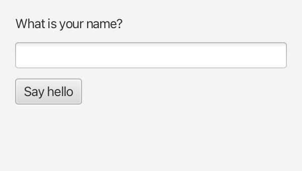
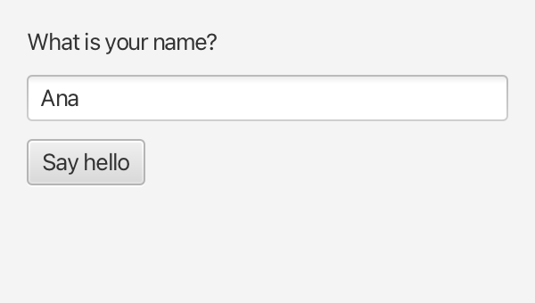
Reading a text field in a handler
public class GreetHandler implements EventHandler<ActionEvent>
{
private TextField nameField;
private Label greeting;
public GreetHandler(TextField nameField, Label greeting)
{
this.nameField = nameField;
this.greeting = greeting;
}
@Override
public void handle(ActionEvent event)
{
String name = nameField.getText();
greeting.setText("Hello, " + name + "!");
}
}This handler needs two objects: the box to read and the label to change. Both come in through the constructor. handle reads the name and builds the greeting. In start, four objects go into the VBox, from top to bottom, and the handler gets the same nameField and greeting that are in the window:
Label prompt = new Label("What is your name?");
TextField nameField = new TextField();
Button button = new Button("Say hello");
Label greeting = new Label("");
button.setOnAction(new GreetHandler(nameField, greeting));
VBox root = new VBox(10);
root.setPadding(new Insets(15));
root.getChildren().addAll(prompt, nameField, button, greeting);
stage.setTitle("Hello");
stage.setScene(new Scene(root, 300, 170));
stage.show();When getText runs
getText() is called inside handle, so it reads the box at the moment of the click. If the user types Ana and clicks, the window shows Hello, Ana!. If the user then empties the box and clicks again, it shows Hello, !. Calling getText() in start would not work: start runs before the user has typed anything, so it would always give "", the empty string.
Checking for an empty name
Hello, ! does not tell the user what went wrong. The new handle checks for an empty name with the String method isEmpty() and tells the user what to do. This is feedback, and it makes the interface forgiving.
@Override
public void handle(ActionEvent event)
{
String name = nameField.getText();
if(name.isEmpty()) {
greeting.setText("Please type your name first.");
}
else {
greeting.setText("Hello, " + name + "!");
}
}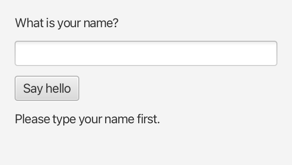
Practice
5.1 A handler has the fields nameField and greeting. Write its handle method so that a click shows Good morning, followed by the name and a full stop, for example Good morning, Ana.
5.2 Change your handle from 5.1 so that an empty box shows Name missing. instead.
5.3 A student reads the box in start and passes the string name to the handler. The handler's handle method runs greeting.setText("Hello, " + name + "!");
Label prompt = new Label("What is your name?");
TextField nameField = new TextField();
Button button = new Button("Say hello");
Label greeting = new Label("");
String name = nameField.getText();
button.setOnAction(new EarlyHandler(name, greeting));The user types Ana and clicks Say hello. What does the window show, and why?
5.4 The program uses the handle that checks for an empty name. Fill in what the greeting label shows after each action, in order.
| Action | Greeting label shows |
|---|---|
The user types Ben and clicks | |
| The user empties the box and clicks | |
The user types Cy and does not click | |
| The user clicks |
5.5 What does getText() return when the text field is empty?
null"", the empty string" ", a single space- It throws an exception.
5.6 Where must getText() be called to get what the user typed?
- In
start, right after the text field is made. - In the handler's constructor.
- Inside
handle. - In
main.
5.7 With the empty-name check, the user types two spaces and clicks. What does the label show?
Please type your name first.Hello,followed by three spaces and!Hello, !- Nothing changes.
6. Layouts
VBox and HBox
We never give a button an x and y position. A pane arranges its children for us, and arranges them again when the window changes size. VBox makes a column and HBox makes a row. The number in new VBox(10) is the gap between children, in pixels. The two programs below are the same except for the line above each window.
VBox root = new VBox(10);
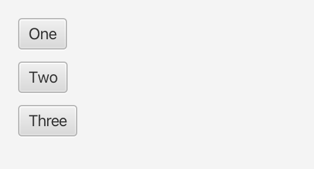
HBox root = new HBox(10);
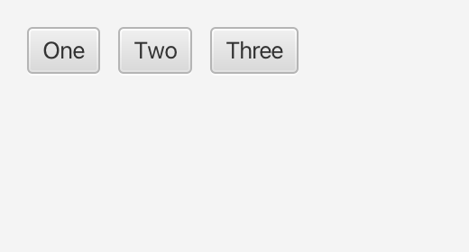
setPadding(new Insets(15)) leaves 15 pixels of space inside the edge of a pane. new Insets(10, 0, 10, 0) gives the four sides separately, in the order top, right, bottom, left: here 10 above and 10 below only.
BorderPane
A BorderPane has five areas: top, left, center, right and bottom. Each area holds one object, set with setTop, setLeft, setCenter, setRight and setBottom. Areas we leave empty take no space. Calling setBottom a second time replaces the first object.
BorderPane root = new BorderPane();
root.setTop(new Button("Top"));
root.setLeft(new Button("Left"));
root.setCenter(new Button("Center"));
root.setRight(new Button("Right"));
root.setBottom(new Button("Bottom"));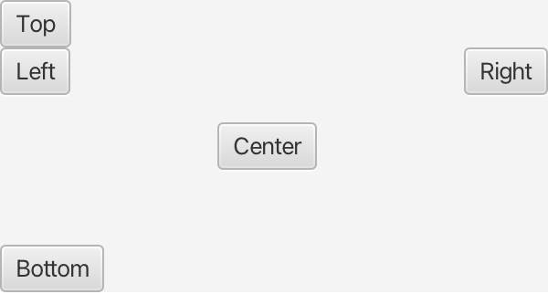
When the window is made bigger, the top and bottom areas stay at the edges, the left and right areas stay at the sides, and the centre gets all the extra space. That is why the main content goes in the centre.
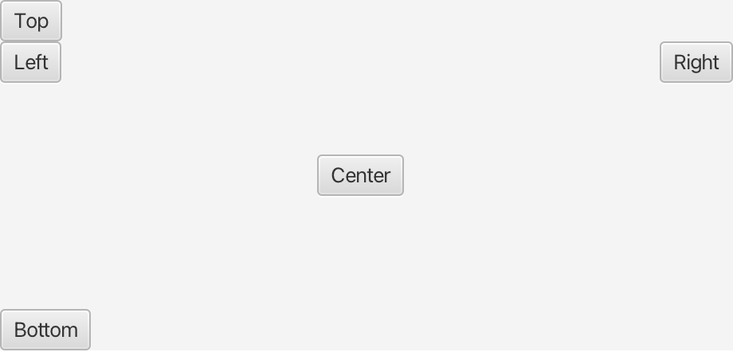
Panes inside panes
Each BorderPane area holds one object. To put two buttons at the bottom, we put them in an HBox, and the HBox goes at the bottom. A pane can go inside another pane, because a pane is an object too. The Greeter is a tidier version of the name program, with a title and a Clear button. ClearHandler is built like GreetHandler; its handle sets the text of both the box and the greeting to "".
Label title = new Label("Greeter");
title.setFont(new Font(20));
Label prompt = new Label("What is your name?");
TextField nameField = new TextField();
Label greeting = new Label("");
Button helloButton = new Button("Say hello");
Button clearButton = new Button("Clear");
helloButton.setOnAction(new GreetHandler(nameField, greeting));
clearButton.setOnAction(new ClearHandler(nameField, greeting));
VBox middle = new VBox(10);
middle.setPadding(new Insets(10, 0, 10, 0));
middle.getChildren().addAll(prompt, nameField, greeting);
HBox buttons = new HBox(10);
buttons.getChildren().addAll(helloButton, clearButton);
BorderPane root = new BorderPane();
root.setPadding(new Insets(15));
root.setTop(title);
root.setCenter(middle);
root.setBottom(buttons);
stage.setTitle("Greeter");
stage.setScene(new Scene(root, 320, 200));
stage.show();The tree of objects
Every window is a tree of objects. JavaFX calls this tree the scene graph. The panes are the branches; the controls the user sees and uses (labels, text fields, buttons) are the leaves.
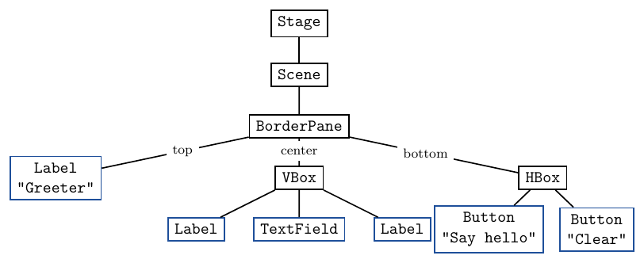
The code builds the tree from the bottom up: first the controls, then the boxes that hold them, then the root, then the scene. Dragging the Greeter window bigger gives the extra space to the centre, so the buttons stay at the bottom.
Practice
6.1 Draw the tree of objects for this window, from the Scene down.
Label title = new Label("New note");
TextField noteField = new TextField();
Button addButton = new Button("Add");
Label count = new Label("0 notes");
HBox row = new HBox(10);
row.getChildren().addAll(noteField, addButton);
VBox root = new VBox(10);
root.setPadding(new Insets(15));
root.getChildren().addAll(title, row, count);6.2 The objects title, noteField, save and cancel are already made. Write the code that puts title at the top of a BorderPane called root, noteField in the centre, and save and cancel side by side at the bottom, with padding 15.
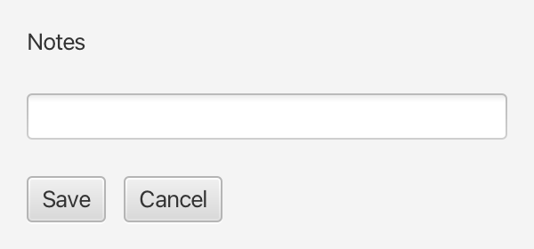
6.3 The Greeter's two buttons are in an HBox, and the HBox is placed with root.setBottom(buttons). Why not call root.setBottom(helloButton) and then root.setBottom(clearButton)?
6.4 Which code shows save and cancel side by side at the bottom of a BorderPane?
root.setBottom(save); root.setBottom(cancel);- An
HBoxholding both, placed withroot.setBottom(...). root.setBottom(save, cancel);- A
VBoxholding both, placed withroot.setBottom(...).
6.5 In new VBox(10), what is 10?
- The gap between the children, in pixels.
- The largest number of children.
- The space around the edge of the box.
- The width of the box.
6.6 The Greeter window is dragged much bigger. Which area of its BorderPane gets the extra space?
- The top, so the title grows.
- The bottom, so the buttons spread out.
- The centre.
- All five areas get an equal share.
6.7 In the Greeter's tree of objects, which objects are the leaves (objects with no children)?
- The panes:
BorderPane,VBoxandHBox. - The controls: the labels, the text field and the buttons.
- The
Stageand theScene. - Only the buttons.
7. Review
Practice
7.1 Design a window for a tip calculator. It has a title at the top; a label Bill amount, a text field and a result label in the middle; and two buttons, 15% and 20%, side by side at the bottom. Draw its tree of objects from the BorderPane down, and say which objects need handlers.
7.2 A student's ClearHandler has only a greeting field, and its handle does greeting.setText("");. Users say the name stays in the box after Clear. Write the corrected class.
7.3 Put these steps of the HelloName program in the order they happen: (a) getText() runs; (b) setOnAction stores the handler; (c) the user types a name; (d) stage.show() runs; (e) the user clicks.
7.4 Which line registers a handler?
new GreetHandler(nameField, greeting);on its own linehelloButton.setOnAction(new GreetHandler(nameField, greeting));greeting.setText("Hello, " + name + "!");root.getChildren().add(new GreetHandler(nameField, greeting));
7.5 In the ScoreWindow from the slides, the - and + buttons do nothing when clicked. What is missing?
- The buttons must be in a
BorderPane. - Handler classes, registered on the buttons with
setOnAction. - A call to
handleat the end ofstart. - A second call to
stage.show().
8. Complete Java Programs
Write these two programs after class, in BlueJ. Each uses a plain Java class that keeps the data, handler classes, and a JavaFX class that builds the window.
Program A: Click Counter
Counterhas anintfieldcount, set to 0 by its constructor, and three methods:add()adds 1,reset()sets it back to 0, andgetCount()returns it.AddHandlerimplementsEventHandler<ActionEvent>. Its constructor takes aCounterand aLabel, in that order.handlecallsadd()and sets the label toCount:followed by the count.ResetHandleris the same, buthandlecallsreset().CounterAppmakes oneCounter, a title labelClick Counterwithnew Font(20), a labelCount: 0, and the buttonsAdd oneandReset, and registers a handler on each button. ABorderPanewith padding 15 has the title at the top, the count label in the centre, and anHBox(10)with the two buttons at the bottom. The window is titledCounter, 280 by 160.
Start from this code:
public class Counter
{
private int count;
public Counter()
{
// Start at 0.
}
public void add()
{
// Add 1.
}
public void reset()
{
// Back to 0.
}
public int getCount()
{
// Return the count.
}
}public class AddHandler
implements EventHandler<ActionEvent>
{
private Counter counter;
private Label display;
public AddHandler(Counter counter,
Label display)
{
// Store both references.
}
@Override
public void handle(ActionEvent event)
{
// add(), then show "Count: " and
// the count on the label.
}
}The window after Add one is clicked three times:
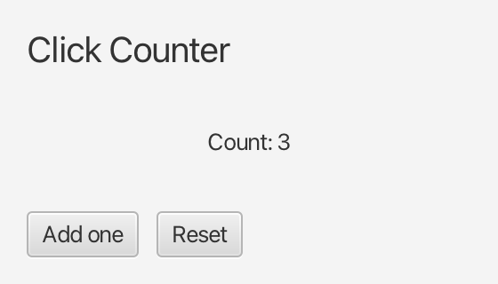
Write the four classes in BlueJ and run CounterApp. When the window works, paste your four classes here and compare them with the model answer.
Program B: Shopping List
ShoppingListhas a fieldArrayList<String> items, made by its constructor, and four methods:add(String item),clear(),size(), andtoString(), which returns the items joined with commas:String.join(", ", items).AddItemHandler's constructor takes aShoppingList, aTextFieldand two labels,listLabelandstatus, in that order.handlereads the text field. If it is empty, the status showsType an item first.Otherwise it adds the item to the list, setslistLabelto the size,items:and the list, empties the text field, and sets the status toAddedfollowed by the item and a full stop.ClearListHandler's constructor takes the list,listLabelandstatus.handleclears the list, setslistLabelto0 itemsand the status toList cleared.ShoppingAppmakes the list, a titleShopping Listwithnew Font(20), the text field, the buttonsAddandClear list, a label0 itemsand an empty status label. ABorderPanewith padding 15 has the title at the top; in the centre, aVBox(10)with paddingInsets(10, 0, 10, 0)holding the text field, anHBox(10)with the two buttons, and the list label; and the status label at the bottom. The window is titledShopping, 340 by 220.
Start from this code:
import java.util.ArrayList;
public class ShoppingList
{
private ArrayList<String> items;
public ShoppingList()
{
// Create the list.
}
public void add(String item)
{
// Add the item.
}
public void clear()
{
// Remove every item.
}
public int size()
{
// The number of items.
}
@Override
public String toString()
{
// String.join(", ", items)
}
}@Override
public void handle(ActionEvent event)
{
// 1. Read the text field.
// 2. If it is empty, show
// "Type an item first."
// in the status label.
// 3. Otherwise: add the item,
// set listLabel, empty the
// field, and set the status.
}The window after milk, eggs and bread are added:
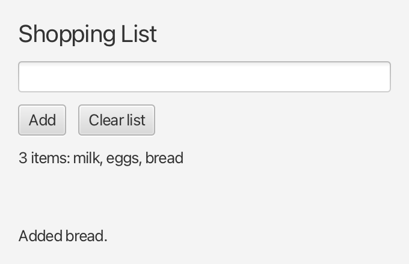
Write the four classes in BlueJ and run ShoppingApp. When the window works, paste your four classes here and compare them with the model answer.
Lecture summary
A GUI program builds a window and then waits. The user's clicks and key presses decide which code runs next. In JavaFX, every part of the window is an object, a handler class says what a button does, and panes arrange the objects.
Good design
- Four principles: visible (you can see what to do), feedback (the screen shows what happened), consistent (the same action works the same way everywhere) and forgiving (mistakes are easy to spot and fix).
Event flow
- The event loop waits for an event, runs the code for it and redraws what changed, until the window is closed. JavaFX writes the loop; we write only the handlers.
- A game loop does not wait: it draws a new frame about 60 times a second.
- A console program is sequential; a GUI program is event-driven. An event (a click, a key press) runs its handler.
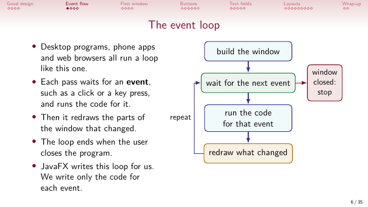
First window
- A JavaFX program
extends Applicationand overridesstart(Stage stage). JavaFX makes the object and the stage, then callsstart. - The Stage is the window, the Scene is what is inside it (one root object), and a Label is text. Nothing appears until
stage.show(). - Run JavaFX programs in BlueJ: right-click the class and choose Run JavaFX Application.
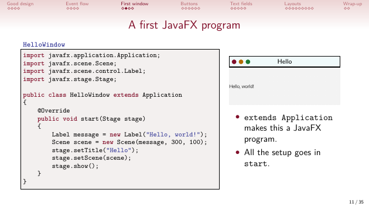
Buttons
- A handler class
implements EventHandler<ActionEvent>and writeshandle(ActionEvent event). The objects it changes come in through its constructor. button.setOnAction(new HelloHandler(greeting));registers the handler. It only stores it;handleruns once per click, afterstarthas finished.
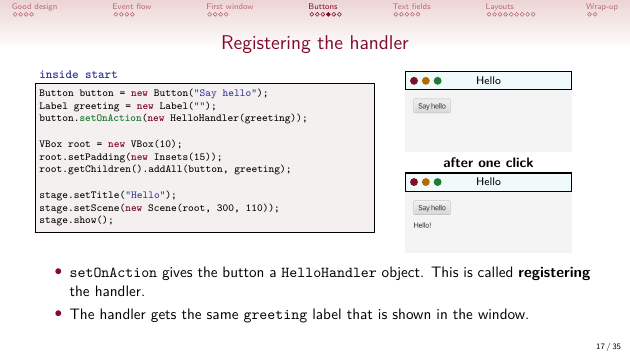
Text fields
- A TextField is a box to type in. Call
getText()insidehandle, so it reads the box at the moment of the click. - An empty box gives
"". Check withisEmpty()and tell the user what to do.
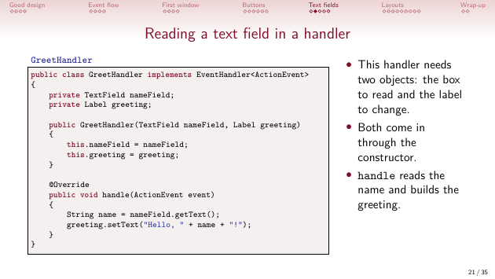
Layouts
- VBox makes a column and HBox a row;
new VBox(10)puts 10 pixels between children, andsetPadding(new Insets(15))leaves space at the edge. - A BorderPane has top, left, center, right and bottom. Each area holds one object, and the centre gets the extra space.
- Panes go inside panes. Every window is a tree of objects (the scene graph): panes are branches, controls are leaves.
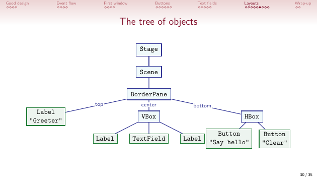
Programs
- The Click Counter and the Shopping List each keep their data in a plain Java class, with one handler class per button.